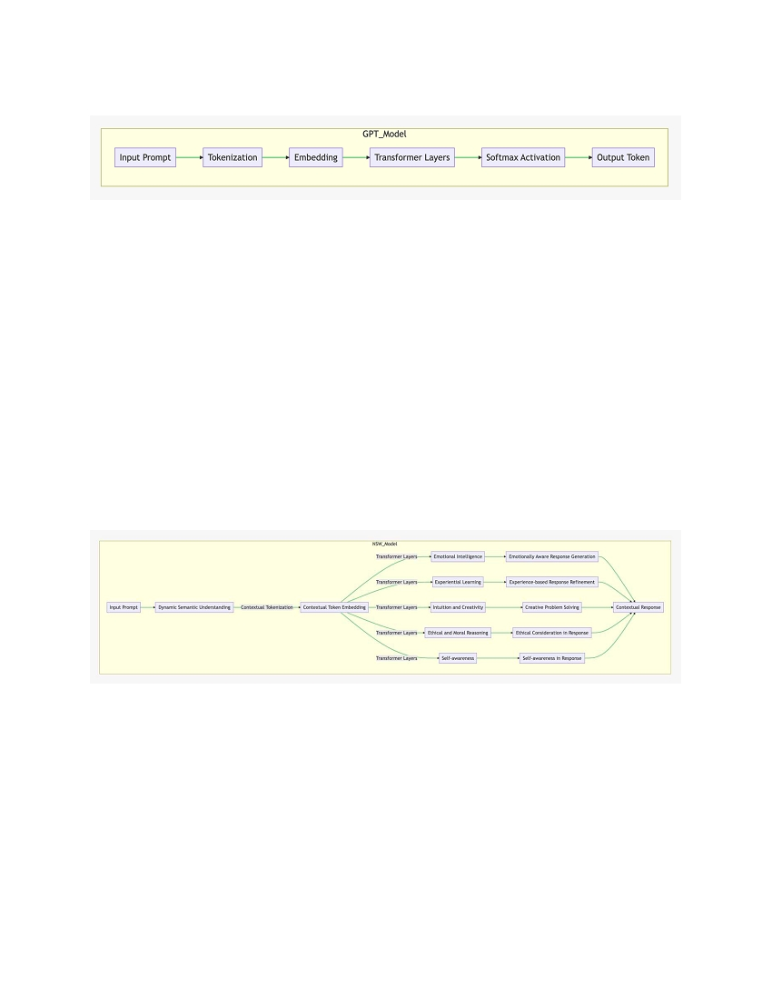
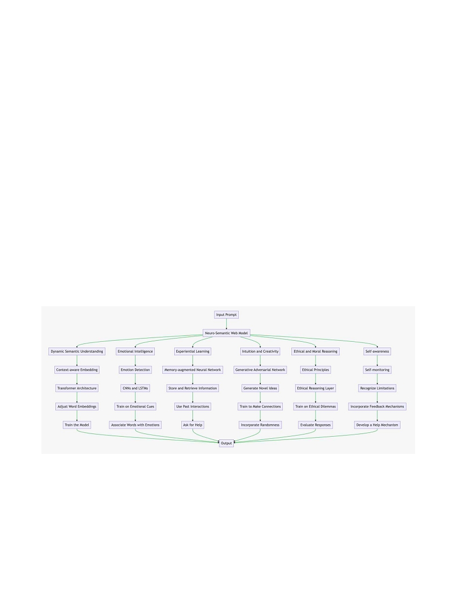

Neuro-Semantic Web: A Novel Approach to Large
Language Models
Abstract
In the realm of artificial intelligence, Large Language Models (LLMs) like GPT-4 have
made significant strides in natural language understanding and generation. However,
these models, while impressive, still lack the nuanced understanding and contextual
awareness that characterizes human cognition. This paper proposes a novel approach to
LLMs, the Neuro-Semantic Web (NSW) model, which aims to mimic the human brain's
ability to understand, contextualize, and generate responses based on a complex web of
semantic associations, emotional contexts, and experiential learning. The goal is to shift
from linear thought patterns to "webbed" thought patterns, thereby enhancing the model's
ability to understand and generate human-like responses.
Large Language Models (LLMs) like GPT-4 have been increasingly deployed for general
problem-solving across a wide range of tasks. However, their inference mechanisms are
still confined to token-level, left-to-right decision-making processes. This means they can
fall short in tasks that require exploration, strategic lookahead, or where initial decisions
play a pivotal role. To surmount these challenges, we introduce a new framework for
language model inference, the "Neuro-Semantic Web" (NSW).
Unlike traditional language models that generate responses in a linear fashion, NSW
allows language models to perform deliberate decision-making by considering multiple
different reasoning paths and self-evaluating choices to decide the next course of action.
Furthermore, NSW provides the ability to look ahead or backtrack when necessary to
make global choices.
This paper presents the NSW model as a promising avenue for future research, with the
potential to significantly improve the performance of LLMs in a wide range of tasks.
1. Introduction
The NSW model is broken down into several key components: Dynamic Semantic
Understanding, Emotional Intelligence, Experiential Learning, Intuition and Creativity,
Ethical and Moral Reasoning, and Self-awareness. Each of these components is designed
to mimic a specific aspect of human cognition, and together they form a comprehensive
model that can understand and generate responses in a way that is much more similar to
human cognition than current LLMs.
Components of the Neuro-Semantic Web Model vs GPT-4:

GPT-4 Model
1. Input Prompt : This is the initial text that is fed into the model. It could be a question, a
statement, or any piece of text.
2. Tokenization : The input prompt is broken down into smaller pieces, or tokens. In the
case of GPT-4, these tokens are subwords or characters.
3. Embedding : Each token is then mapped to a high-dimensional space using an
embedding. This transforms the tokens into a form that the model can work with.
4. Transformer Layers : The embedded tokens are passed through several layers of the
transformer model. Each layer is capable of learning different features from the input.
5. Softmax Activation : The output from the transformer layers is passed through a softmax
activation function. This function generates a probability distribution over the possible
output tokens, indicating the likelihood of each token being the next token in the
sequence.
6. Output Token : The token with the highest probability is selected as the output token.
This process is repeated for each token in the input sequence, generating a sequence of
output tokens that forms the model's response.
Neuro-Semantic Web Model
1. Input Prompt : This is the initial text that is fed into the model. It could be a question, a
statement, or any piece of text.
2. Dynamic Semantic Understanding : The input prompt is processed by the model, which
dynamically adjusts its understanding based on the context of the conversation.
3. Contextual Tokenization : The input prompt is broken down into smaller pieces, or
tokens, taking into account the context of the conversation.
4. Contextual Token Embedding : Each token is then mapped to a high-dimensional space
using an embedding. This transforms the tokens into a form that the model can work
with.
5. Transformer Layers : The embedded tokens are passed through several layers of the
transformer model. Each layer is capable of learning different features from the input.

6. Emotional Intelligence : The model recognizes and responds to emotional cues in the
input prompt.
7. Experiential Learning : The model "learns" from each interaction, adjusting its behavior
based on feedback.
8. Intuition and Creativity : The model makes intuitive leaps and engages in creative
problem-solving.
9. Ethical and Moral Reasoning : The model understands and applies ethical and moral
principles.
10. Self-awareness : The model understands its own state and capabilities.
11. Emotionally Aware Response Generation : The model generates a response that is
aware of the emotional context of the conversation.
12. Experience-based Response Refinement : The model refines its response based on its
past experiences.
13. Creative Problem Solving : The model applies creative problem-solving techniques to
generate its response.
14. Ethical Consideration in Response : The model takes into account ethical considerations
when generating its response.
15. Self-awareness in Response : The model takes into account its own state and capabilities
when generating its response.
16. Contextual Response : The outputs from the Emotionally Aware Response Generation,
Experience-based Response Refinement, Creative Problem Solving, Ethical
Consideration in Response, and Self-awareness in Response components are combined to
generate a contextual response.
1. Dynamic Semantic Understanding
The first component of the NSW model is Dynamic Semantic Understanding. This
involves understanding the literal meaning of words and phrases, as well as their context,
connotations, and cultural significance. The model should dynamically adjust its
understanding based on the context of the conversation or text.

This could be implemented using a Transformer model such as BERT or GPT-3. The
model would be fine-tuned on specific datasets to adjust word embeddings based on the
context of the conversation. The adjusted word embeddings contribute to the final output.
2. Emotional Intelligence
The second component is Emotional Intelligence. This involves recognizing and
responding to emotional cues in text, much like a human would. The model should
understand the emotional tone of the conversation and adjust its responses accordingly,
showing empathy where needed.
This could be implemented using sentiment analysis libraries such as NLTK or TextBlob.
The model would be trained on emotion-labeled datasets to associate words with
emotions.
3. Experiential Learning
The third component is Experiential Learning. This involves the ability to "learn" from
each interaction, much like a human brain learns from experiences. The model should
remember past interactions and use that knowledge to inform future responses.
This could be implemented using Recurrent Neural Networks such as LSTM or GRU.
The model would be trained on sequential data to store and retrieve information from past
interactions.
4. Intuition and Creativity
The fourth component is Intuition and Creativity. This involves the capability of intuitive
leaps and creative problem-solving, much like a human brain. The model should not be
limited to linear, logical processing, but could make connections between seemingly
unrelated concepts, come up with new ideas, and suggest innovative solutions to
problems.
This could be implemented using Generative Adversarial Network (GAN) libraries such
as TensorFlow or PyTorch. The model would be trained on diverse datasets to generate
novel ideas and make connections between seemingly unrelated concepts.
5. Ethical and Moral Reasoning
The fifth component is Ethical and Moral Reasoning. This involves the ability to
understand and apply ethical and moral principles, much like a human would. The model
should be able to understand the ethical implications of its responses and make decisions
that align with a set of predefined ethical principles.
This could be implemented using ethics datasets such as EthicsNet or Moral Machine.
The model would be trained on ethical dilemmas to evaluate the ethical implications of
its responses.

6. Self-awareness
The final component is Self-awareness. This involves the ability to understand its own
state and capabilities, much like a human would. The model should be able to recognize
its own limitations, understand when it needs to ask for help or seek additional
information, and adjust its behavior based on feedback.
This could be implemented using feedback mechanisms such as reinforcement learning.
The model would incorporate user feedback to recognize its own limitations.
Conclusion
The Neuro-Semantic Web model represents a significant step forward in the development
of Large Language Models. By incorporating aspects of human cognition such as
dynamic semantic understanding, emotional intelligence, experiential learning,
intuition
and creativity, ethical and moral reasoning, and self-awareness, the
NSW model promises
to deliver more human-like responses and a more nuanced
understanding of text. While
the implementation of this model will undoubtedly
present challenges, the potential
benefits in terms of improved natural
language understanding and generation make it a
promising avenue for future
research.
Future Work
Future work will focus on refining the implementation of each component of the NSW
model, as well as integrating these components into a cohesive whole. In addition, further
research is needed to develop effective training methods for each component, as well as
to identify appropriate datasets for training. Finally, ethical considerations will play a
crucial role in the development of the NSW model, and future work will need to address
these issues in a comprehensive and thoughtful manner.
Summary
In summary, this paper proposes a new approach to Large Language Models, the Neuro-
Semantic Web model, which aims to mimic the human brain's ability to understand,
contextualize, and generate responses. The model is made up of several components,
each designed to mimic a specific aspect of human cognition. The goal is to create a
model that can understand and generate responses in a way that is much more similar to
human cognition than current models. This represents a significant step forward in the
field of artificial intelligence and opens up exciting new possibilities for future research.
Implementation:
Dynamic Semantic Understanding:
1. Contextual Word Embeddings : I would utilize contextual word embeddings, such as
BERT or GPT, to capture the semantic meaning of words based on their surrounding
context. These embeddings provide a foundation for the model to understand the
semantics of individual words within a sentence.
2. Transformer Architecture : I would employ a transformer-based architecture that allows
the model to capture long-range dependencies and contextual relationships between
words. Transformers have demonstrated effectiveness in natural language understanding
tasks and can facilitate dynamic semantic understanding.
3. Multi-layered Encoding : To enhance the model's semantic understanding, I would use
multiple layers of encoding that progressively extract and refine semantic information

from the input. Each layer would incorporate attention mechanisms to focus on relevant
context and capture fine-grained semantic details.
4. Contextual Attention Mechanisms : I would incorporate attention mechanisms that
dynamically weigh the importance of different words and contextually adjust their
contributions to the overall understanding. This enables the model to prioritize relevant
information and capture contextual semantics effectively.
5. Pre-training and Fine-tuning : I would pre-train the LLM on a large corpus of diverse
text to learn general language patterns and semantics. During pre-training, the model
would learn to predict missing words or masked tokens, further enhancing its semantic
understanding. After pre-training, the model would be fine-tuned on specific downstream
tasks to adapt its understanding to domain-specific semantics.
6. Semantic Parsing and Representation : I would explore techniques for semantic
parsing, which involve converting natural language expressions into formal
representations that capture the meaning and structure of the input. This would enable the
model to reason about and manipulate the semantics of the input text more effectively.
7. Continual Learning and Adaptation : To enhance dynamic semantic understanding, I
would investigate techniques for continual learning and adaptation, allowing the model to
update its understanding based on new information or evolving contexts. This would
enable the LLM to stay up-to-date with changing semantics and adapt to user-specific
preferences.